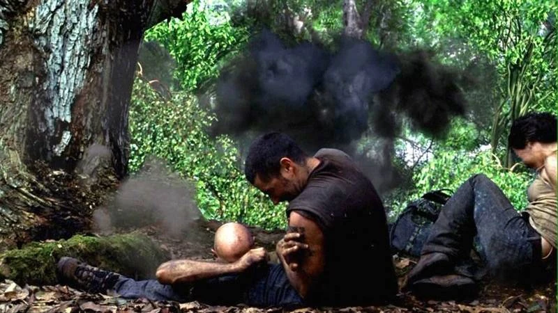
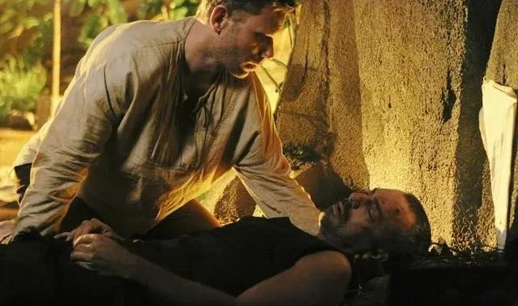
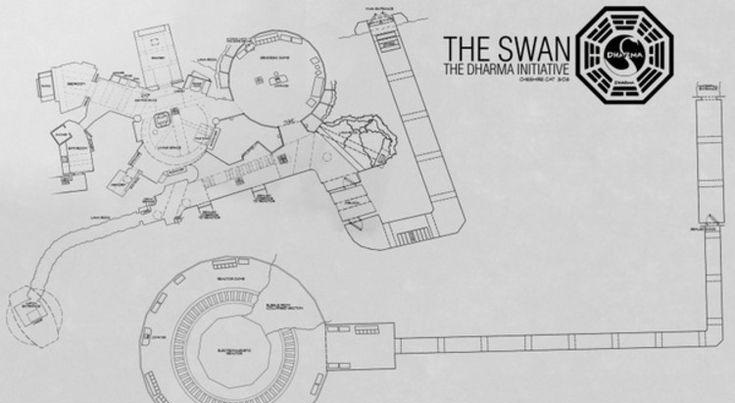
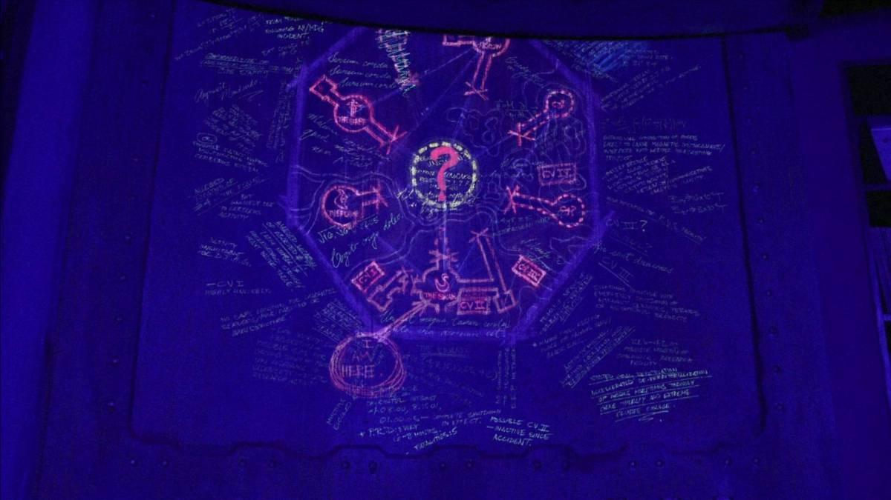

"Lost" criou dezenas de mistérios ao longo de suas temporadas, mas alguns deles continuam sem respostas definitivas até hoje. E o mais intrigante é que muitos desses enigmas parecem esconder algo ainda maior por trás da ilha.
Enquanto algumas perguntas receberam explicações superficiais, certos acontecimentos continuam extremamente obscuros mesmo após o final da série.
"Quanto mais Lost explicava a ilha... mais impossível ela parecia."
1. O Que REALMENTE Era o Monstro de Fumaça?


O Smoke Monster é provavelmente o maior mistério da série.
Nas primeiras temporadas, a criatura parecia apenas um monstro sobrenatural que habitava a floresta. Mas conforme Lost avançava, ficou claro que aquilo era algo muito mais complexo.
O mais estranho é que o monstro não se comportava como um animal. Ele parecia inteligente.
☠️ Coisas impossíveis que o monstro fazia:
- Escaneava memórias das vítimas
- Assumia aparência de mortos
- Manipulava emocionalmente sobreviventes
- Escolhia quem matar
- Demonstrava conhecimento do passado das pessoas
A série revela que o Homem de Preto se transformou na criatura após entrar na fonte de energia da ilha. Mas isso não explica totalmente o que o monstro era.
Afinal: como uma energia eletromagnética criaria algo capaz de pensar, planejar e manipular humanos?
Muitos fãs acreditam que o Smoke Monster não era mais o Homem de Preto. A teoria sugere que a energia da ilha criou uma entidade própria, usando apenas as memórias dele como base.
Isso explicaria por que a criatura parecia tão desumana, fria e quase impossível de compreender.
"Talvez o Homem de Preto tenha morrido naquele momento... e apenas algo usando sua aparência tenha saído da caverna."
2. Por Que a Ilha Curava Algumas Pessoas?
Esse é um dos aspectos mais assustadores de Lost.
A ilha claramente possuía capacidades sobrenaturais. Mas ela não ajudava todos igualmente.
John Locke voltou a andar imediatamente após o acidente. Rose teve seu câncer curado. Ferimentos graves cicatrizavam de maneira impossível.
Ao mesmo tempo, outras pessoas morriam normalmente.
🧠 Casos mais estranhos de "cura":
- Locke recuperando os movimentos instantaneamente
- Rose entrando em remissão total do câncer
- Mikhail sobrevivendo a ferimentos absurdos
- Desmond resistindo a efeitos eletromagnéticos extremos
Isso levou fãs a acreditarem que a ilha escolhia pessoas específicas.
Segundo uma teoria popular, a energia da ilha reagia ao "papel" de cada indivíduo dentro do equilíbrio da realidade.
Locke, por exemplo, precisava acreditar que tinha um destino. A cura de sua paralisia transformou ele em um seguidor fanático da ilha.
Ou seja: talvez as curas nunca tenham sido bondade.
Talvez fossem manipulação.
3. O Que a Iniciativa Dharma Descobriu de Tão Perigoso?


A Dharma Initiative começou como um grupo científico interessado em pesquisas avançadas. Mas rapidamente ficou claro que eles estavam lidando com algo completamente fora do controle humano.
As estações espalhadas pela ilha estudavam fenômenos absurdos:
🧪 Experimentos secretos da Dharma:
- Manipulação temporal
- Energia eletromagnética extrema
- Controle psicológico
- Experimentos sociais
- Problemas de fertilidade causados pela ilha
O incidente na estação Cisne talvez seja o evento mais importante de toda a série.
Quando Desmond deixou de apertar o botão, a energia acumulada começou a causar um colapso eletromagnético gigantesco.
Isso confirma que existia algo monstruoso escondido sob a ilha.
Mas o verdadeiro mistério é: a Dharma realmente entendia aquela energia... ou apenas estava tentando controlar algo impossível?
Muitos fãs acreditam que a organização descobriu que a ilha possuía propriedades capazes de alterar a própria realidade.
E talvez tenha sido exatamente isso que levou ao colapso da iniciativa.
4. Por Que os Números Apareciam em Tudo?
4, 8, 15, 16, 23 e 42.
Esses números aparecem tantas vezes em Lost que praticamente se tornam um personagem da série.
Eles estavam:
🔢 Onde os números apareciam:
- No bilhete premiado de Hurley
- Na escotilha
- Nos candidatos de Jacob
- Em transmissões misteriosas
- Em documentos da Dharma
- Nas coordenadas da ilha
Oficialmente, a série diz que os números representavam candidatos escolhidos por Jacob.
Mas isso claramente não explica tudo.
O material expandido de Lost introduziu a Equação Valenzetti, uma fórmula matemática capaz de prever o fim da humanidade.
Segundo essa teoria, os números seriam variáveis fundamentais ligadas ao colapso da civilização.
A Dharma acreditava que alterar esses valores poderia salvar o mundo.
Isso transforma os números em algo muito mais assustador: eles não seriam coincidências... mas constantes universais.
"Os números não perseguiam Hurley. Eles perseguiam o destino."
5. O Tempo Funcionava Diferente na Ilha?
Nas temporadas finais, Lost praticamente abandona o realismo.
Personagens começam a viajar involuntariamente no tempo, aparecendo em diferentes períodos da história da ilha.
O problema é que a série nunca explica totalmente como isso funcionava.
⏳ Eventos temporais mais estranhos:
- Desmond adquirindo consciência temporal
- Os sobreviventes viajando entre décadas
- Objetos existindo antes de serem criados
- Daniel Faraday tentando alterar eventos já ocorridos
A teoria mais aceita afirma que a energia eletromagnética da ilha afetava diretamente o espaço-tempo.
Isso faria da ilha um ponto anormal na realidade, capaz de distorcer passado, presente e futuro simultaneamente.
O mais assustador é que Lost sugere várias vezes que o tempo era inevitável.
Não importava o que os personagens tentassem mudar — os eventos acabavam acontecendo exatamente como deveriam.
Isso levanta uma questão perturbadora: os sobreviventes realmente tinham livre arbítrio... ou estavam presos em um ciclo impossível de escapar?
Conclusão
Lost continua fascinante porque nunca entregou respostas simples.
A série tratava mistérios como parte da experiência, fazendo os fãs analisarem teorias durante anos.
E talvez esse seja o verdadeiro segredo da ilha: quanto mais você tenta entender Lost... mais misteriosa ela se torna.
Artigos Relacionados